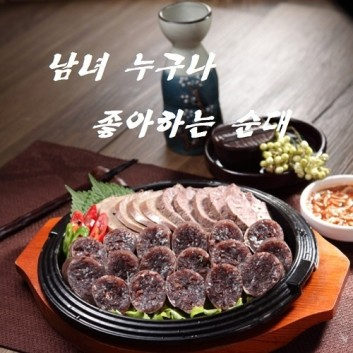
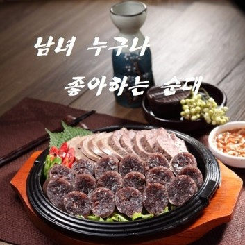

공장소개/순대납품/순대도매
순대공장,순대납품,순대도매,돈골육수b,순대국다대기,순대국부산물,순대국재료
1989년 설립한 순대공장 신창식품&청정식품은 순대 및 돼지부산물 가공,생산하는 기업으로 전국의 순대국집,국밥체인과 대기업 납품 및 수출을 중점으로 하고 있습니다.
최신 설비를 도입 HACCP 인증과 식품 위해 요소 중점관리 기준에 맞추어 설비와 시설을 반자동화로 완비하여 위생적이고 안전하게 제품을 생산할수 있도록 최선을 다하고 있습니다.

순대국밥 전문점에서는 찰순대보다는 고기순대를 많이 사용하고 계세요.
순대공장 신창식품&청정식품에서 직접 생산하는 제품을 소개합니다. 토종순대,병천순대,토속순대는 순대국용으로 아바이백순대,청양순대는 모듬순대 또는 국밥용으로 쓰이고 있습니다.순대납품 및 순대도매 상담 받아보세요.
최소 단위 2kg이니 1개씩 주문해 보셔서 시음해 보신 후 결정하시는 것도 좋은 선택이 될수 있습니다.
순대국집에서 순대국 재료 중 부산물을 삶다 보면 작은 규모의 가게에서는 특유의 냄새가 홀까지 있었어요.
HACCP 인증 받은 순대공장 신창식품에서는 도축장 직거래로 돼지부산물(머리고기슬라이스,감투슬라이스,곱창슬라이스,사태슬라이스)를 직접 삶아 가공하고 있어요.
순대국 부산물,돼지국밥 부산물,순대국 재료를 더 이상 삶지 마시고 쾌적한 환경에서 국밥집을 운영해보세요.
순대국밥에 육수 또한 중요하죠. 순대국집이나 돼지국밥집에서 생사골을 10시간 이상 삶다보면 특유의 냄새 때문에 더러 민원이 발생하기고 하더군요.
이제는 시간절약,노동,가스비 걱정 없이 순대국 육수를 사용해보세요. 적극 추천합니다. 돼지사골과 소사골 뼈에서 추출한 순수 농축액으로 돈골육수 b 입니다.
처음 끓기전까지는 센불로 끓이시고,끓고 나서는 약불로 10분간만 더 끓여 주심 됩니다. 돈골육수 희석 기본 배합은 육수 1kg+물 17kg입니다.
주로 국밥집에서 순대국 육수로 사용하지만 라멘집,김치찌개 전문점에서도 주로 사용하기도 하며 떡국,전골육수 등 다양하게 쓰이는 깊고 진한 맛 돈골육수 입니다.
순대국다대기(순한맛) 는 순대국,돼지국밥 등 국밥집에서 사용하며 홀에서 손님들이 직접 새우젓과 함께 조미할수 있어요. 또한 곱창전골이나 한식집에서 여러 전골류에 다양하게 쓰실수 있어요.
얼큰다대기는 순대국,돼지국밥 등 여러 탕류에 사용하며 구수하고 얼큰한 맛이 일품입니다. 캡사이신 전혀 첨가하지 않고 고추가루로 매운맛을 내었어요. 요즘은 얼큰 다대기를 많이 선호하고 있어요.
순대국 다대기 5kg, 얼큰 다대기 2kg 두가지 제품이 있어요. 재주문 100%일 정도로 인기 있는 제품입니다.
 

분식집 순대,순대볶음용 순대,스테이크용 순대,곱창볶음용 순대 시장에서 분식집의 맛을 재현한 추억의 순대,시장에서 먹던 분식집 순대. 신창식품&청정식품에서 생산하고 있어요. 언제 어느때고 즐길수 있도록 선지와 찹쌀,찰떡,야채를 채워 놓고 순대의 쫄깃쫄깃한 맛을 살리기 위해 당면도 빠뜨리지 않고 푸짐하게 채워 놓았습니다. 순대타운에서 순대볶음용 순대,곱창볶음용 순대로 많이 사용되고 있는 찰순대입니다.

백순대 곱창볶음에 사용되는 아바이백순대 소개할려고 합니다. 참 담백하고 맛있지요. 그러기에 스테이크용 순대로도 사용되는 고급 순대입니다. 돼지고기,야채,두부,계란 등으로 제조되어 선지가 첨가하지 않아 색상이 밝으며 모듬순대로도 적절합니다. 여러모로 곱창볶음,스테이크,모듬용으로 쓰이고 있어요. 신창식품의 효자 순대입니다.
매스컴이 소개한 순대공장 신창식품
KBS-TV 방영 생생정보통 2014년 1월15일 방영!
맛있는 순대와 순대국 재료 일절,신선한 부산물을 찾고 계신다면 주말,공휴일 언제든지 편하게 전화주셔서 상담 받아보세요. 순대납품,순대도매 및 업종변경이나 창업상담 환영합니다.
☎️ 대표전화 : 1533-6156